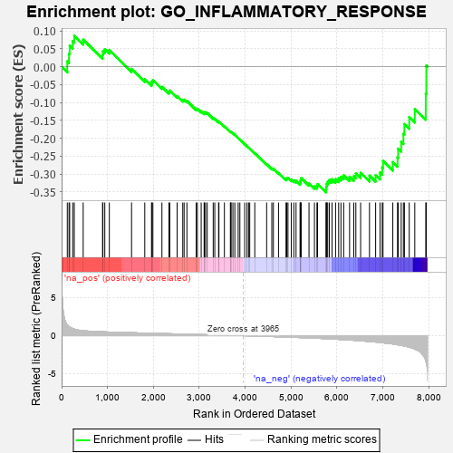
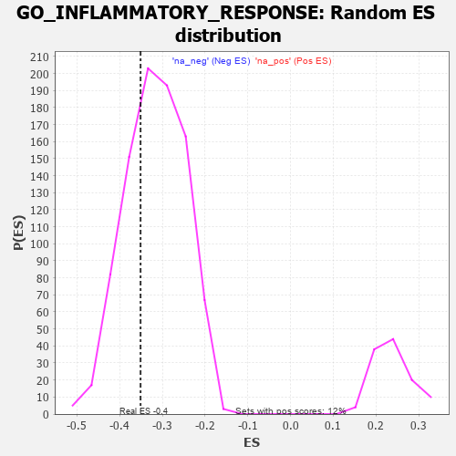

| | | Dataset | 7d |
| Phenotype | NoPhenotypeAvailable |
| Upregulated in class | na_neg |
| GeneSet | GO_INFLAMMATORY_RESPONSE |
| Enrichment Score (ES) | -0.3511206 |
| Normalized Enrichment Score (NES) | -1.1118081 |
| Nominal p-value | 0.30542988 |
| FDR q-value | 0.73487943 |
| FWER p-Value | 1.0 |
Table: GSEA Results Summary

Fig 1: Enrichment plot: GO_INFLAMMATORY_RESPONSE
Profile of the Running ES Score & Positions of GeneSet Members on the Rank Ordered List
| PROBE | GENE SYMBOL | GENE_TITLE | RANK IN GENE LIST | RANK METRIC SCORE | RUNNING ES | CORE ENRICHMENT | | 1 | ADCY8 | | | 124 | 1.418 | 0.0150 | No |
| 2 | CSRP3 | | | 161 | 1.186 | 0.0361 | No |
| 3 | FOXF1 | | | 176 | 1.136 | 0.0590 | No |
| 4 | NFX1 | | | 242 | 0.949 | 0.0713 | No |
| 5 | HGF | | | 276 | 0.870 | 0.0859 | No |
| 6 | LRP1 | | | 470 | 0.648 | 0.0755 | No |
| 7 | HMGB2 | | | 892 | 0.507 | 0.0330 | No |
| 8 | HDAC5 | | | 900 | 0.506 | 0.0431 | No |
| 9 | PDCD4 | | | 941 | 0.497 | 0.0488 | No |
| 10 | AKT1 | | | 1040 | 0.476 | 0.0467 | No |
| 11 | LIAS | | | 1524 | 0.387 | -0.0062 | No |
| 12 | ABR | | | 1812 | 0.335 | -0.0354 | No |
| 13 | CCR4 | | | 1959 | 0.312 | -0.0472 | No |
| 14 | NFRKB | | | 1968 | 0.310 | -0.0414 | No |
| 15 | GPX4 | | | 1989 | 0.306 | -0.0373 | No |
| 16 | SYK | | | 2186 | 0.278 | -0.0562 | No |
| 17 | ANO6 | | | 2339 | 0.255 | -0.0700 | No |
| 18 | MIF | | | 2357 | 0.252 | -0.0667 | No |
| 19 | TLR1 | | | 2517 | 0.224 | -0.0820 | No |
| 20 | ATRN | | | 2640 | 0.207 | -0.0930 | No |
| 21 | WDR83 | | | 2669 | 0.203 | -0.0921 | No |
| 22 | RORA | | | 2730 | 0.193 | -0.0956 | No |
| 23 | ACVR1 | | | 2932 | 0.161 | -0.1176 | No |
| 24 | BTK | | | 2958 | 0.156 | -0.1174 | No |
| 25 | UFL1 | | | 3041 | 0.144 | -0.1247 | No |
| 26 | AIMP1 | | | 3105 | 0.136 | -0.1297 | No |
| 27 | GPX1 | | | 3109 | 0.135 | -0.1272 | No |
| 28 | OGG1 | | | 3135 | 0.132 | -0.1275 | No |
| 29 | SCYL1 | | | 3172 | 0.126 | -0.1293 | No |
| 30 | SMAD3 | | | 3303 | 0.105 | -0.1435 | No |
| 31 | SMAD1 | | | 3337 | 0.099 | -0.1456 | No |
| 32 | SETD6 | | | 3420 | 0.087 | -0.1541 | No |
| 33 | TRIL | | | 3428 | 0.087 | -0.1531 | No |
| 34 | PRDX5 | | | 3547 | 0.068 | -0.1666 | No |
| 35 | ABCD1 | | | 3677 | 0.047 | -0.1820 | No |
| 36 | CD180 | | | 3686 | 0.046 | -0.1820 | No |
| 37 | DHX9 | | | 3693 | 0.044 | -0.1818 | No |
| 38 | SYT11 | | | 3732 | 0.036 | -0.1858 | No |
| 39 | SBNO2 | | | 3774 | 0.032 | -0.1903 | No |
| 40 | FEM1A | | | 3847 | 0.021 | -0.1990 | No |
| 41 | TPST1 | | | 3884 | 0.013 | -0.2033 | No |
| 42 | VPS35 | | | 3989 | -0.006 | -0.2164 | No |
| 43 | MCPH1 | | | 4039 | -0.014 | -0.2223 | No |
| 44 | CSF1 | | | 4074 | -0.019 | -0.2262 | No |
| 45 | CHID1 | | | 4099 | -0.023 | -0.2287 | No |
| 46 | TIMP1 | | | 4209 | -0.043 | -0.2416 | No |
| 47 | LRRK2 | | | 4467 | -0.087 | -0.2724 | No |
| 48 | CMA1 | | | 4580 | -0.114 | -0.2841 | No |
| 49 | GATA3 | | | 4614 | -0.120 | -0.2857 | No |
| 50 | PXK | | | 4726 | -0.144 | -0.2966 | No |
| 51 | CLU | | | 4889 | -0.174 | -0.3134 | No |
| 52 | VAMP8 | | | 4905 | -0.179 | -0.3115 | No |
| 53 | CASP1 | | | 4932 | -0.185 | -0.3107 | No |
| 54 | KLF4 | | | 5005 | -0.198 | -0.3156 | No |
| 55 | PLD3 | | | 5059 | -0.212 | -0.3177 | No |
| 56 | MMP9 | | | 5108 | -0.227 | -0.3189 | No |
| 57 | SMO | | | 5195 | -0.247 | -0.3245 | No |
| 58 | ASH1L | | | 5203 | -0.248 | -0.3200 | No |
| 59 | ATM | | | 5210 | -0.249 | -0.3153 | No |
| 60 | GPR4 | | | 5219 | -0.250 | -0.3109 | No |
| 61 | ACER3 | | | 5390 | -0.294 | -0.3262 | No |
| 62 | FABP4 | | | 5509 | -0.322 | -0.3342 | No |
| 63 | FOLR2 | | | 5563 | -0.336 | -0.3336 | No |
| 64 | SPHK1 | | | 5576 | -0.339 | -0.3278 | No |
| 65 | TLR2 | | | 5761 | -0.395 | -0.3426 | Yes |
| 66 | ELF3 | | | 5768 | -0.396 | -0.3347 | Yes |
| 67 | VAMP7 | | | 5777 | -0.399 | -0.3271 | Yes |
| 68 | ADA | | | 5798 | -0.405 | -0.3209 | Yes |
| 69 | SNX4 | | | 5834 | -0.415 | -0.3163 | Yes |
| 70 | CDO1 | | | 5892 | -0.432 | -0.3142 | Yes |
| 71 | TTBK1 | | | 5969 | -0.460 | -0.3139 | Yes |
| 72 | RAC1 | | | 6036 | -0.484 | -0.3117 | Yes |
| 73 | MMP25 | | | 6086 | -0.501 | -0.3071 | Yes |
| 74 | SCN9A | | | 6146 | -0.518 | -0.3034 | Yes |
| 75 | STK39 | | | 6274 | -0.563 | -0.3073 | Yes |
| 76 | BIRC3 | | | 6366 | -0.603 | -0.3058 | Yes |
| 77 | MBL2 | | | 6411 | -0.623 | -0.2979 | Yes |
| 78 | TRPV4 | | | 6515 | -0.668 | -0.2965 | Yes |
| 79 | EGFR | | | 6708 | -0.765 | -0.3043 | Yes |
| 80 | MGLL | | | 6842 | -0.838 | -0.3030 | Yes |
| 81 | GHSR | | | 6937 | -0.894 | -0.2955 | Yes |
| 82 | PDE2A | | | 6985 | -0.927 | -0.2814 | Yes |
| 83 | CCR2 | | | 7003 | -0.939 | -0.2632 | Yes |
| 84 | KLKB1 | | | 7216 | -1.090 | -0.2665 | Yes |
| 85 | GRN | | | 7319 | -1.194 | -0.2536 | Yes |
| 86 | CYLD | | | 7333 | -1.206 | -0.2291 | Yes |
| 87 | CELA1 | | | 7399 | -1.265 | -0.2100 | Yes |
| 88 | GGT1 | | | 7447 | -1.329 | -0.1871 | Yes |
| 89 | SHPK | | | 7469 | -1.360 | -0.1603 | Yes |
| 90 | NLRC3 | | | 7574 | -1.515 | -0.1407 | Yes |
| 91 | ADCY1 | | | 7695 | -1.752 | -0.1180 | Yes |
| 92 | ABCF1 | | | 7934 | -3.354 | -0.0755 | Yes |
| 93 | XIAP | | | 7947 | -3.696 | 0.0030 | Yes |
Table: GSEA details [plain text format]

Fig 2: GO_INFLAMMATORY_RESPONSE: Random ES distribution
Gene set null distribution of ES for GO_INFLAMMATORY_RESPONSE